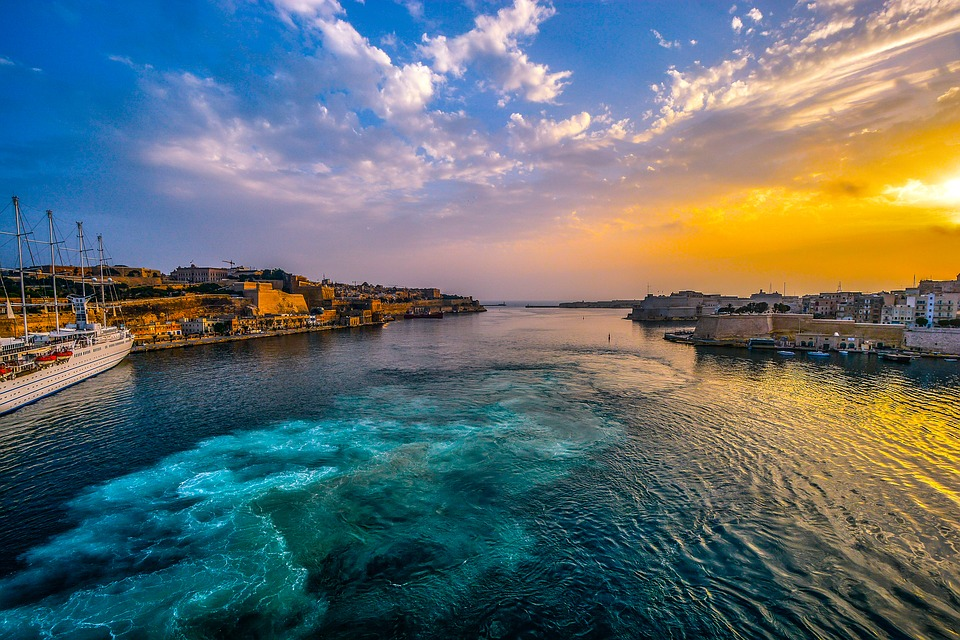
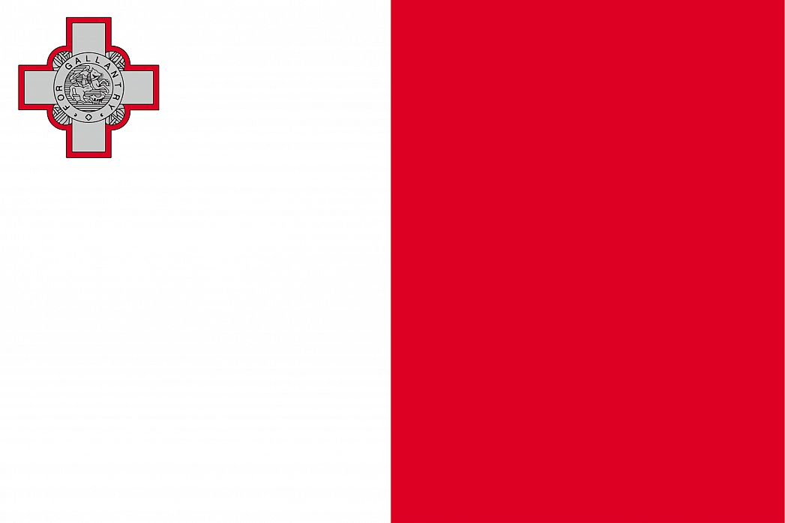

Missä Malta sijaitsee?
Maltan tasavalta on saarivaltio Välimerellä, noin 93 km Sisiliasta etelään. Valtio koostuu
useasta saaresta, joista kolme on asuttuja: pääsaari Malta, Gozo ja Comino.
Pääkaupunki Valletta
sijaitsee pääsaarella. Maltaa lähinnä oleva valtio on Italia.
Malta on tiheästi asuttu maa
Maltalla asuu noin 412 000 asukasta. Sen pinta-ala on kuitenkin vain 316 neliökilometriä, joten
asutustiheys on suuri, noin 1282,2/km². Malta kuuluu Euroopan unioniin
ja sillä on kuusi paikkaa Euroopan parlamentissa.

Tiesitkö tämän Maltasta?
- Maltalla käytetty valuutta on euro
- Maltan viralliset kielet ovat malta ja englanti, myös italiaa ymmärretään laajasti
- BKT on yhteensä 11,14 miljardia USD
- Malta itsenäistyi 21. syyskuuta 1964
Maltan maisemat ovat karuja, mutta kauniita
Maltan tunnettuja kaupunkeja
- Birkirkara
- Birzebbuga
- Rabat
- Sliema
- St. Julian's
- Valletta 
Lisätietoa
| Varaa matkasi täältä | Matkaoppaita Maltalle | Muita hyödyllisiä linkkejä |
|---|---|---|
| Matkatoimisto Tui | Malta-matkaopas | Sää Maltalla |
| Matkatoimisto Tjäreborg | Malta-opas | Maltan kulttuuri |